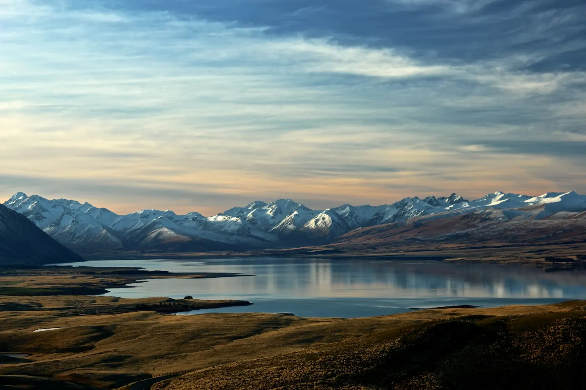

Cameras · Rumor
Sony a7R VI: 66.8 MP of resolution on the way
A stacked sensor and 8.5 stops of in-body stabilization are expected.
PortraitRaw Desk · Share on WhatsApp

Designed for high-resolution landscape and studio photography, the Sony a7R VI is expected to arrive with a 66.8 MP stacked sensor and 8.5 stops of in-body image stabilization (IBIS).